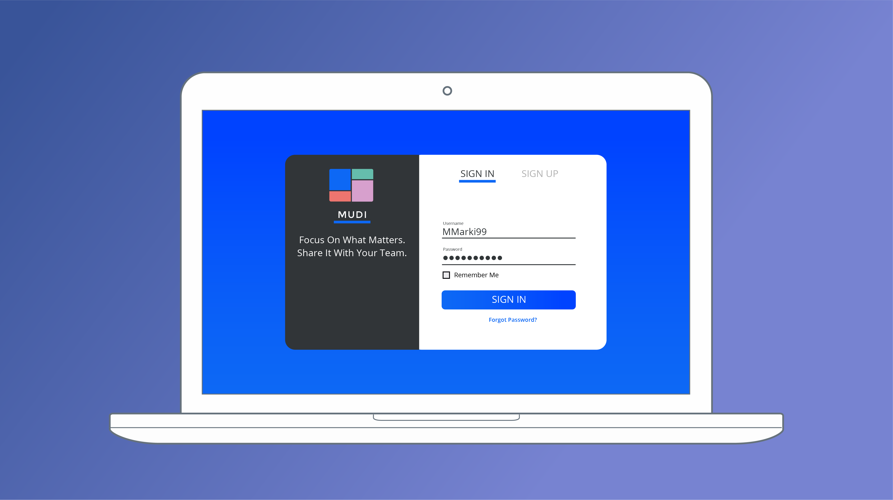

Designing a Digital Moodboard Tool
Sketching | Wireframing | Branding & Visual Design | High-Fidelity Mockups
The Problem:
Moodboards traditionally have a very flat hierarchy where all the pictures are given equal visual importance. I wanted to create a moodboard tool where the importance of a picture to the overall feel of the moodboard determined it's size. The tool itself had to be visually quiet and understated, so that the contents of each moodboard would stand out. It also had to encourage collaboration between team members. Finally, images needed to resize gracefully with minimal disruption to the surrounding images.
Sketching:
I generated a large volume of sketches to figure out how the moodboard would be laid out and how it would function.
Wireframing:
The wireframing stage was very brief. For wireframing to be useful, it needs to provide the designer with new information that sketching does not. The tool I used was very minimalistic, which was good for rapidly creating wireframes, but it hindered my ability to go in-depth and learn much about the design that I couldn't through sketching. If I were to do this project again, I would use a more robust wireframing tool to get more insights during this phase.

Branding & Visual Design:
The UI needed to be unintrusive. I chose a pleasant, undistracting color palette that was predominantly greys and blues, and a simple, readable font.
Originally I intended the colored squares of the logo to be a pattern of squares that MUDI could actually create. In practice, this design wasn't readable when the logo was scaled down to a tiny icon. The most important part of the logo design process was seeing how the logo looked as part of the actual UI.
Some of the later changes I made to the logo included making it more colorful and simple so that it scaled better, and making it more symmetrical to make it look balanced when centered over text.
No element of design exists in a vacuum. You can try to plan ahead, but sometimes you need to see a part of the design in the context of the rest of the product.
High-Fidelity Mockups:
When I created the mockups, I paid attention to the design of the modal windows and empty states even if they seemed secondary to the primary moodboard page.